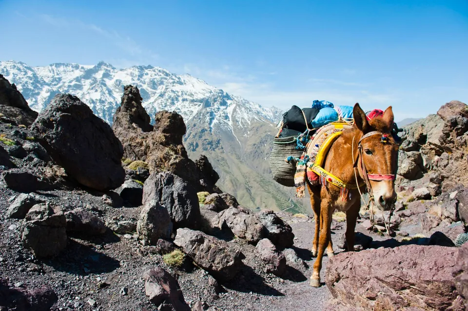
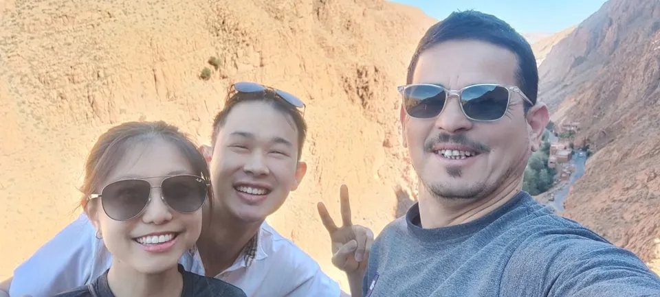
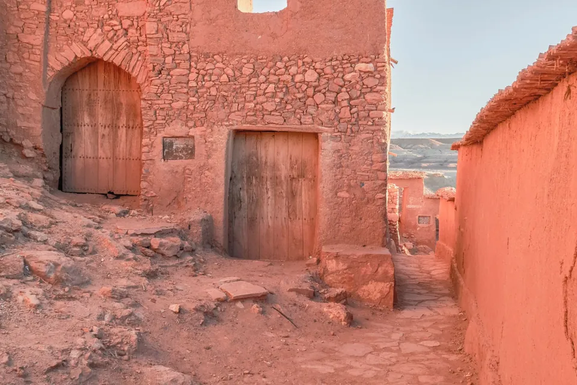

Le thé à l’arrivée
Après la marche, la théière arrive avant même que les sacs soient posés : thé à la menthe et pain encore chaud.
NOTRE HISTOIRE
Nous sommes des guides de Marrakech et du Haut Atlas. Ces montagnes, nous les connaissons de l’intérieur : leurs sentiers, leurs vallées et les douars qui les font vivre.

QUI NOUS SOMMES
Nous sommes Mohamed et Hassan, une petite équipe de guides locaux, entre Marrakech et le Haut Atlas. Ces montagnes, ces vallées et ces villages, nous ne les avons pas découverts dans un livre : nous les connaissons de l’intérieur.
Nous connaissons les sentiers muletiers qui relient les douars, les familles qui ouvrent leur porte aux marcheurs, les muletiers qui nous accompagnent et la façon dont le temps change en altitude.
Quand vous marchez avec nous, vous ne suivez pas seulement un itinéraire : vous entrez dans la vie de la montagne, à son rythme et au vôtre.
POURQUOI NOUS LE FAISONS
Nous aimons montrer l’Atlas tel que nous le vivons, loin des itinéraires les plus fréquentés. Chaque lieu a son caractère :
CE QUE NOUS VIVONS ENSEMBLE
Nous marchons ensemble sur les sentiers muletiers, à un rythme qui laisse le temps de regarder, de parler et de souffler. Les mules portent les bagages ; vous ne gardez que votre sac de la journée.
Le soir, nous dormons chez des familles des villages. On partage le thé à la menthe, le pain cuit au village et le repas, assis ensemble autour du plat.
Il y a aussi le silence des hauts plateaux, le lever du soleil au sommet, et toutes les personnes rencontrées en chemin : bergers, muletiers, familles des douars.
SUR LE CHEMIN
Quelques scènes de nos sorties dans le Haut Atlas.
Après la marche, la théière arrive avant même que les sacs soient posés : thé à la menthe et pain encore chaud.
Sur le plateau, on n’entend plus que le vent. On s’arrête, on écoute, on regarde les gravures sur la roche.
Départ dans la nuit, lampe frontale allumée, puis la lumière qui monte sur les crêtes au moment d’atteindre le Toubkal.
Un berger qui partage le chemin, une famille qui nous invite à entrer : en montagne, les rencontres font partie du voyage.


NOS VALEURS
Chaque sortie est privée, pour votre groupe seulement. Nous prenons le temps de connaître chacun et d’adapter le rythme.
Nous entrons dans les douars comme des invités : discrétion, tenue adaptée, photos avec l’accord des habitants.
Les familles qui vous accueillent et les muletiers qui nous accompagnent sont rémunérés équitablement pour leur travail.
En montagne, la météo et la forme du groupe décident. Nous adaptons l’itinéraire dès que la sécurité l’exige.
ET SI ON MARCHAIT ENSEMBLE ?
Dites-nous vos dates, votre groupe et vos envies : nous vous répondons avec un programme adapté.